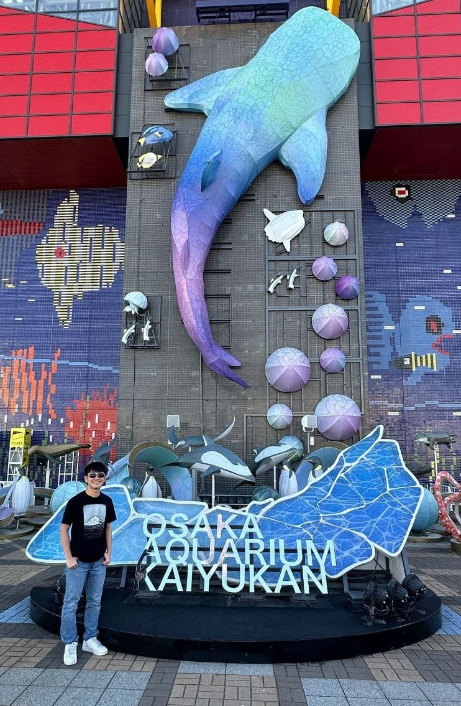

images/profile.jpeg
Introduction
My Story
Hi! I'm Isaac, a double degree student in Accountancy and Data Science & Artificial Intelligence at NTU. I'm passionate about using technology to solve real-world business problems, especially in healthcare and finance.
During my internship at Alliance Healthcare Group, I led a team of interns to develop an OCR-based claims processing system and conducted performance testing for the Health Promotion Board's Clinic Management Software.
I enjoy building projects, exploring new technologies, and applying AI and automation to improve efficiency and drive innovation.
What drives me
Interests
- Applying AI and automation to solve real-world business problems
- Building systems that improve efficiency and decision-making
- Exploring new technology and implementing it in projects
Where I'm headed
Looking Ahead
- Deepening my skills in software engineering, AI, and system design
- Building scalable, real-world systems with measurable impact
- Bridging business knowledge with technology to solve complex problems